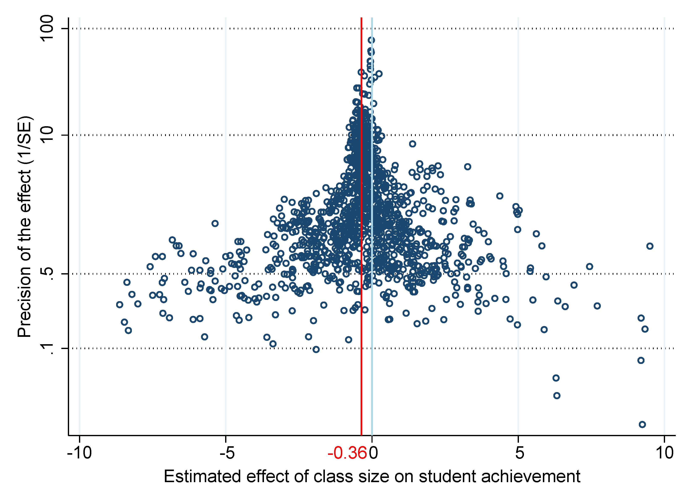

Abstract
Class size reduction mandates are routinely justified by studies reporting positive effects on student achievement. Yet other studies report no effects, and the literature as a whole awaits correction for potential publication bias. Moreover, if identification drives results systematically, the relevance of individual studies will vary. We build a sample of 2,819 estimates collected from 66 studies and for each estimate classify 42 factors that reflect estimation context. We employ nonlinear techniques for publication bias correction and model averaging techniques to address model uncertainty. The results are consistent with little publication bias. The implied class size effect is negligible for all identification approaches except Tennessee's Student/Teacher Achievement Ratio project and for all contexts except classes of fewer than 15 students.
Fig: Little publication bias, most precise estimates around zero
Reference: Opatrny Matej, Havranek Tomas, Irsova Zuzana, Milan Scasny (2025), "Publication Bias and Model Uncertainty in Measuring the Effect of Class Size on Achievement." Journal of Labor Economics, forthcoming.